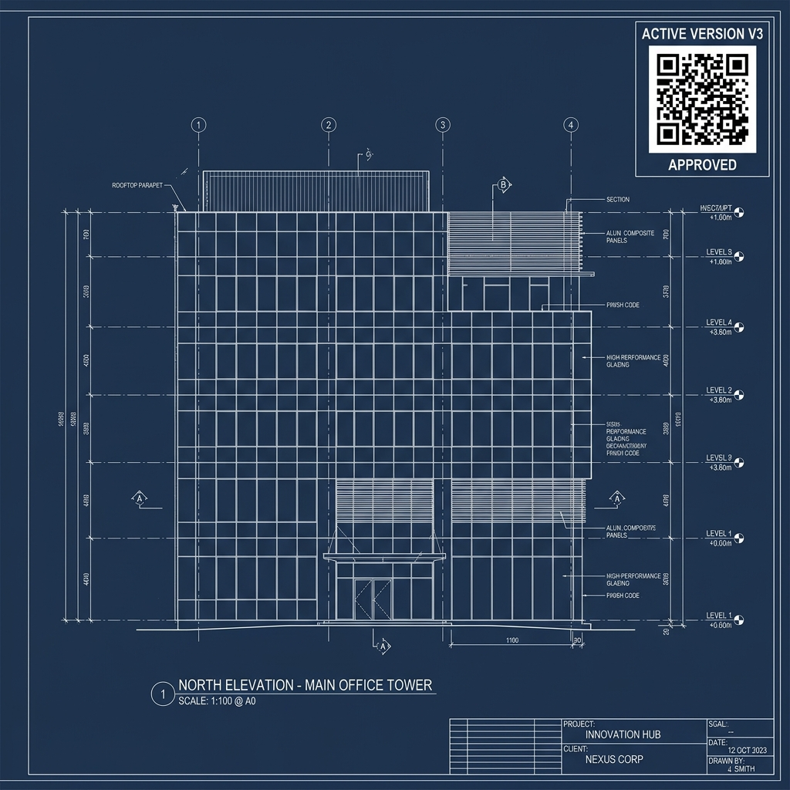

Current Workflow (As-Is)
Manual & FragmentedHow execution works today, causing delays, coordination gaps, and data isolation.
Scattered Drawings & Revisions
Drawings are sent over WhatsApp/Emails. Engineers on site often work on outdated drawing versions without knowing a revision was issued.
WhatsApp / PDF MailManual BOQ & Ordering
BOM sheets are compiled in Excel. Ordering materials, verifying store stocks, and checking pending orders is done via phone calls.
Excel Sheet / Phone CallFactory Production Status Blindspot
Management cannot see factory status easily. Multiple messages must be sent to the factory team to know if an item is ready or dispatched.
WhatsApp GroupsPartial Delivery & Store Disputes
Materials dispatched in parts. Discrepancies between what was shipped, received, and installed are tracked in offline registers.
Paper Challan / DiaryUnstructured DPRs & Delay Alerts
Site engineers copy-paste daily updates into WhatsApp. Project manager manually updates Excel trackers. Delays are discovered too late.
WhatsApp Message / Daily CallFuture Workflow (To-Be)
Integrated PlatformThe BuildOS system: A unified database connecting Design, Factory, Store, and Site in real time.
DesignOS (Drawing & Version Control)
Shop & Structural Drawings uploaded with strict revision locks. Site scanning instantly shows if a drawing is approved for installation.
Central CAD DatabaseProjectOS & BOQ (Auto Status Mapping)
BOQ connects to WBS (Tower/Floor/Zone). Track order lifecycle automatically (Confirmed -> Ordered -> Dispatch -> Site Received).
Dynamic BOQ TrackingFactoryOS (Production & QC Releases)
Production releases are tracked on simple kanban states. Quality check (QC) status triggers automatic barcode or QR tags for transport.
QR Scan & Status LogsInventoryOS (Full vs Partial Dispatches)
Dispatches mapped to challans. App lists precisely what was sent. Site engineer logs received count, instantly flagging discrepancies.
Challan Digital LedgerSiteOS & AI-DPR Engine
Site engineers click photos & mark installation progress on the mobile app. TRDI progress calculates automatically. AI summaries are pushed to WhatsApp.
Auto WhatsApp DPR & AI Summary🤖 AIOS Services
- AI DPR Generator
- Delay & Risk Predictor
- WhatsApp Chat Summarizer
- Material Forecast Engine
📱 Site App
- Attendance & Labours
- Site Photo & Issues Log
- QR Material Gate-In
- Instant Blocker Log
💬 WhatsApp Link
- Daily Progress Logs
- Auto Delay Alerts
- DPR PDF Auto-Bounces
- Management Alerts
*Click on any step below to see its Inputs, Outputs, Responsible Roles, and System Integrations.
BUILDOS Vision & Outcome Matrix
1. One Source of Truth
All projects, drawing versions, materials and progress tracked in a single central cloud database.
2. Real-Time Visibility
Directors and PMs instantly see live TRDI metrics, active bottlenecks, and delays at every floor.
3. Faster Completion
Identify contractor shortages, material shipment gaps, and design holds before they halt work.
CURRENT OPERATION
Excel Spreadsheets + Unorganized WhatsApp Chats + Manual Calls & Follow-up
FUTURE OPERATION
BuildOS Platform + Mobile Field Logs + Live Dashboards + Automatic WhatsApp Summaries
Why BuildOS Is Needed (Problems Log)
1. Scattered Project Data
Different Excel files managed by different project heads, causing duplicate sheets and data isolation.
2. WhatsApp-Based Progress
Daily T/R/D/I text updates cannot be parsed, searched, or consolidated into structured reports.
3. Outdated Drawings
Site installation teams using old CAD revisions, leading to expensive rework and panel mismatches.
4. No WBS Visibility
Client quantities cannot be tracked or audited tower-wise, floor-wise, or elevation-wise.
5. Incorrect Forecasting
Lifetime averages mask recent site velocity changes, causing delayed project completion forecasts.
6. Materials & Labour Shortages
Hardware and manpower gaps are identified only after the installation halts on site.
7. Management Dependency
Directors rely entirely on project coordinators to manually compile status update sheets.
“BuildOS converts scattered operational updates into a structured, measurable and predictable project execution system.”
The Complete BuildOS Operating Pipeline
- Create Project Master
- Client & Location Data
- Baseline Start/End Date
- Assign PM & Lead
- Import Client BOQ
- Split BOQ into Phases
- Map Towers & Podium
- Map Level / Floor Nodes
- Map Elevation Faces
- Map Zone Divisions
- Concept Drawing V1
- Structural Drawing
- Shop Drawing Approval
- Drawing Revision Logs
- Active Version Lock
- Generate Bill of Mat
- Profile Cutlist Release
- Release Token / SO
- Factory Fab Status
- Production Hold Logs
- Dispatch Loading Plan
- Transit Vehicle Details
- Site Gate-In Record
- Scan Delivered Qty
- Receipt Confirmation
- Contractor Allocation
- Daily Manpower Head
- Log Installed panels
- Site Photo & Voice log
- Quality Audit Review
- Final Installation
- Snag list Inspection
- Snag Corrections
- Completion Cert
- Project Archive
TRDI Progress Framework & Live Validator
Adjust the values below to verify how progress ratios recalculate and validation rules trigger:
T ≥ R ≥ D ≥ I. Installed cannot exceed Delivered. Delivered cannot exceed Released. Released cannot exceed Total.
Dynamic WBS & BOQ Import Pipeline
WBS Tree Roll-up (Paras Avenue - 129):
ℹ️ Child-level updates roll up: Zone ➔ Elevation ➔ Floor ➔ Tower ➔ Project Dashboard.
WBS CONFIGURATION STEP:
Import BOQ ➔ Map Items ➔ Split Phases ➔ Add Towers ➔ Set levels ➔ Define Elevation faces ➔ Map Zones ➔ Allocate Quantities ➔ Run Validation ➔ Activate
Drawing Lifecycle & Revision Lock
Version V3 is verified as approved. Released for production and site cutting.

LIFECYCLE STAGES:
D1 (Concept) ➔ D2 (Structural) ➔ D3 (Shop) ➔ D4 (Fab Cutlist) ➔ D5 (As-Built)
Mobile Site DPR Simulator ("Desi UI")
App Validations Active:
- No negative numbers allowed.
- Installed today cannot exceed total available delivered balance.
- Site photo upload is mandatory for logging installation.
- GPS location stamp matching project zone required.
DPR Data Flow & Approval Scheme
DPR Document Attributes:
DPR ID | Time Logged | Project Ref | WBS Coordinate | Item Category | Prev Deliv | Today Deliv | Total Deliv | Prev Inst | Today Inst | Total Inst | Photo URL | GPS Coordinates | Active Issues Linked
Issue & Site Blocker Tracker
Design & Drawing
- BOQ quantity mismatch
- Cutlist profile error
- Design revision hold
Production & Proc
- Material raw stock out
- BOM count mismatch
- Glazing kiln breakdown
Site & Civil Ready
- Scaffolding structure unsafe
- Power core failure
- Civil slab dimensions off
Installation Hardware
- Bracket anchor shortage
- Winches mechanical failure
- Sub-contractor shortage
Interactive Operational Kanban Board
Click on task buttons to advance them to the next Kanban column status:
Manpower Management & Efficiency Analytics
Active Contractor Headcount:
Live Labor Output Calculator:
4.66 panels / worker
Loose Hardware & Materials Inventory
| Item Name | Required | Received | Consumed | Balance | Pending | Status |
|---|---|---|---|---|---|---|
| Silicone Tubes (GP) | 500 | 350 | 280 | 70 | 150 | LOW STOCK |
| EPDM Rubber Gaskets (m) | 4500 | 4000 | 3100 | 900 | 500 | SUFFICIENT |
| MS Brackets (T1) | 1200 | 800 | 720 | 80 | 400 | RUNNING OUT |
| Facade Anchor Fasteners | 4800 | 4800 | 3500 | 1300 | 0 | SUFFICIENT |
7-Day Velocity & Completion Forecast Engine
Action Recommendation Pushes:
- Deploy second shift at Tower A elevations.
- Resolve anchor brackets delivery delays.
- Open pending design approvals for floor 12 to 14.
Director Command Centre & Portfolio View
| Project | TRDI Breakdown | Install % | Target Date | Forecast Date | Manpower | Status |
|---|---|---|---|---|---|---|
| Paras Avenue - 129 | 13283 / 9200 / 7100 / 5600 | 42.2% | 31 Dec 2026 | 18 Jan 2027 | 29 / 38 | OFF TRACK |
| Noida IT Park - Cladding | 8200 / 8000 / 7800 / 7600 | 92.7% | 15 Aug 2026 | 05 Aug 2026 | 42 / 40 | ON TRACK |
| Grand Residency Glazing | 6000 / 5000 / 4200 / 3800 | 63.3% | 30 Sep 2026 | 12 Oct 2026 | 18 / 24 | AT RISK |
Project Control Dashboard (PM View)
Paras Avenue - Tower A details:
- Design Approvals: 4 drawings pending validation.
- Production Queue: 1,200 panels released, in assembly.
- Site Stores: 300 panels unloaded, awaiting anchors.
- Open Blockers: 3 active issues.
PM Operational Actions:
Persona-Based Application Access Matrix
1. DIRECTOR / OWNER
Needs: Portfolio health dashboards, cash outstandings, delay forecast flags.
Management Centre2. PROJECT MANAGER
Needs: WBS nodes quantities tracking, task assignment reviews, issues resolution.
PM Workspace3. DESIGNER
Needs: CAD drawing version logs, client feedback, BOM recipe generation.
Drawing OS Control4. SITE ENGINEER
Needs: Quick mobile DPR entry, active CAD checking, site photo uploads.
Desi Mobile App5. STORE OFFICER
Needs: Goods receipts, loose inventory balances, challan scans.
Inventory ledger6. SAFETY OFFICER
Needs: Logging incident reports, compliance tracking, work stoppage alerts.
Incident PortalBuildOS Automated Alert Escalation Engine
Triggers Log:
Escalation Ladder:
6:30 PM Automated WhatsApp Daily Summary
🟢 BuildOS Daily Project Summary
13,283 / 9,200 / 7,100 / 5,600
Today's Operations Log:
• Delivered Today: 120 panels
• Installed Today: 86 panels
Analytics Forecast:
• 7-Day Velocity: 12 panels/day
• Project Target Rate: 18 panels/day
• Estimated Forecast Delay: 18 days behind
Active Blockers:
❌ Winch machine failure (Tower A)
❌ Shop drawing V3 pending approval
❌ North elevation civil slab offset
Technical System Architecture & Database Groups
PROJECT DB
- Projects metadata
- Team assignments
- Client rates master
WBS STRUCTURE DB
- Tower/Floor nodes
- Leaf quantities
- WBS roll-up states
DESIGN DB
- Drawing register
- CAD Version Lock
- Approval log tables
EXECUTION LOGS DB
- Production releases
- Challans & Dispatches
- Site received sheets
MVP Phase 1 Sprints Roadmap
Future Platform Expansion Roadmap
Phase 2: Operational Intel
- Detailed stores bin locations
- Purchase tracking & POs
- Contractor measurement reconciliation
- Gatepass digital checks
Phase 3: AI & Automation
- AI computer vision photo audit
- Automatic CAD to WBS extraction
- Weather forecast risk predictor
- Voice logs parser for DPR
Phase 4: Digital Twin
- BIM model interactive render
- 3D WBS zone status checks
- Barcoded tracking per glass panel
- Realtime panels installation map
Paras Avenue – 129 Walkthrough Scenario
13,283 SQM of Unitized Glazing uploaded into the system master.
Allocated 312 panels specifically to Tower A ➔ Level 05 ➔ North Elevation ➔ Zone N2.
Shop Drawing version V3 approved by the client architect, locked as the Active version.
Cutlist generated, 250 panels released to the factory assembly queue.
Truck arrived on site; store manager scans QR tags, registering 180 panels received.
Site engineer submits today's report: Delivered: +20, Installed: +15, uploads panel photo.
Zone N2 TRDI updates to 312 / 250 / 200 / 135. Numbers roll up to the central dashboards.
System recalculates the forecast, flags delayed status, and alerts directors on WhatsApp at 6:30 PM.
Final BuildOS Integrated Hub Map
BUILDOS
Central Core DatabaseMeeting Notes & Scope Discovery
Strategic Meeting Questions
Roles & Dashboards Matrix
Select a user role to see their customized workspace dashboard view and their highlight path in the project lifecycle.